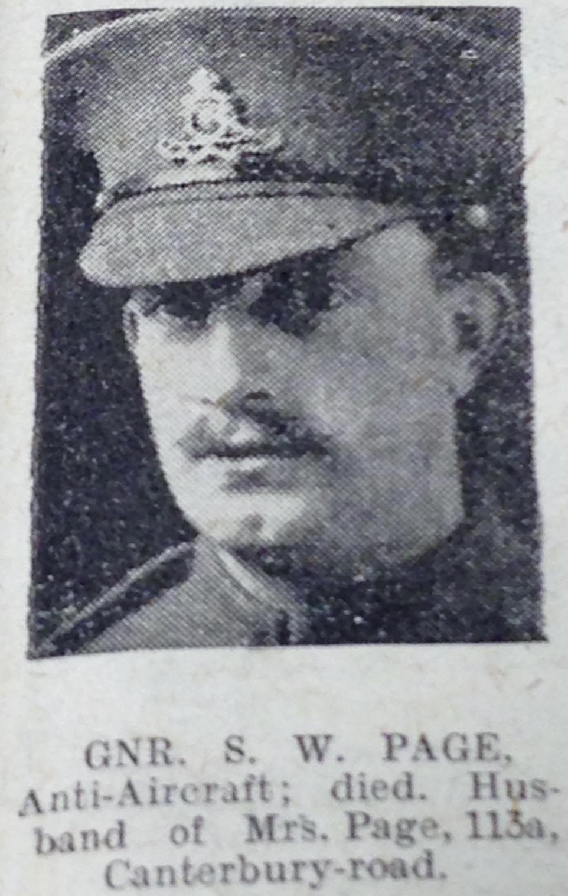
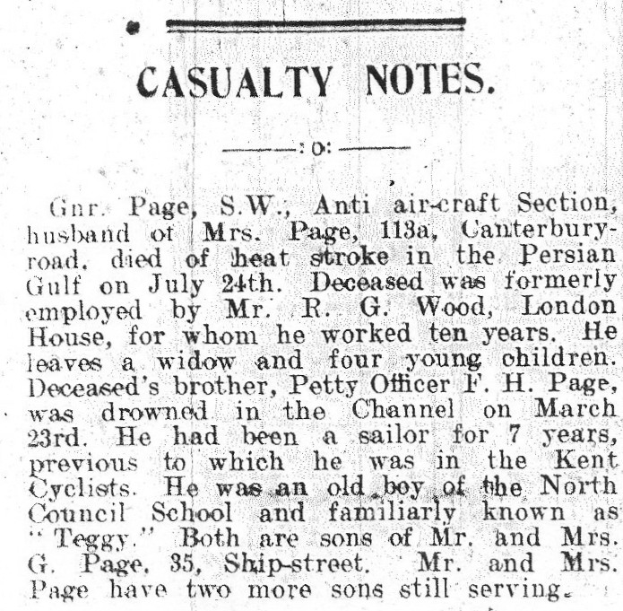
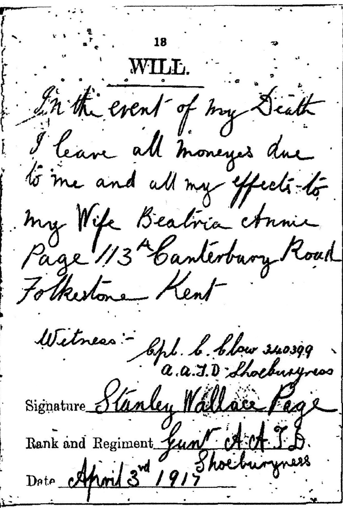

Stanley Wallace Page 1887 - 1917
[ Home ] | [ Calendar ] | [ Surnames Index ] | [ Census Index ] | [ Family History ]The child of James Page and Elizabeth Sellis, Stanley Page, the third cousin once-removed on the father's side of Nigel Horne, was born in Folkestone, Kent, England on May 13, 18871, was baptized there at St John The Baptist on Aug 28, 1887. He married Beatrice Smith (with whom he had 1 surviving child, Winifred E) in Elham, Kent, England around Nov 19105. In 1917 he was serving in the military in Iraq (soldier Number: 121686, Rank: Gunner, Corps: Royal Garrison Artillery).
He died on Jul 24, 1917 in Baghdad, Iraq2,3,4 (heat Stroke) and was buried there at Baghdad War Cemetery (North Gate) after Jul 24, 19176.
Parents
- James Henry was born on Oct 14, 1861
- Elizabeth Ann
Citations
- Kent, Canterbury Archdeaconry baptisms 1538-1912 - Findmypast
- Commonwealth War Graves Commission Debt Of Honour - Findmypast
- Lives Of The First World War 1914-1918 - Findmypast
- Soldiers Died In The Great War 1914-1919 - Findmypast
- England & Wales Marriages 1837-2005 - Findmypast
- https://www.findagrave.com/memorial/12967181
Media
Stanley Wallace Page

Folkestone, Hythe, Sandgate & Cheriton Herald - 27 Jul 1918

Folkestone, Hythe, Sandgate & Cheriton Herald - 24 Jul 1920

Folkestone, Hythe, Sandgate & Cheriton Herald - 10 Aug 1918

Folkestone, Hythe, Sandgate & Cheriton Herald - 20 May 1922

Obituary

Stanley William Page - will

Kent, Canterbury Archdeaconry baptisms 1538-1912 - GBPRS/CANT/B/96669125
England & Wales births 1837-2006 - BMD/B/1887/2/AZ/000434/031
Soldiers died in the Great War 1914-1919 Transcription - GBM-WWISD-0409968
Commonwealth War Graves Commission Debt Of Honour Transcription - GBM-CWGC-ROLLOFHONOUR-000731254
England, Births & Baptisms 1538-1975 Transcription - R_884236519
England & Wales marriages 1837-2005 - BMD/M/1910/4/AZ/000697/020
Lives of the First World War 1914-1918 - GBM/LIVES/3366583
Britain, Campaign, Gallantry & Long Service Medals & Awards - GBM/MCI/3369972
Family Tree

Generated by ged2site. Last updated on Jun 11, 2024